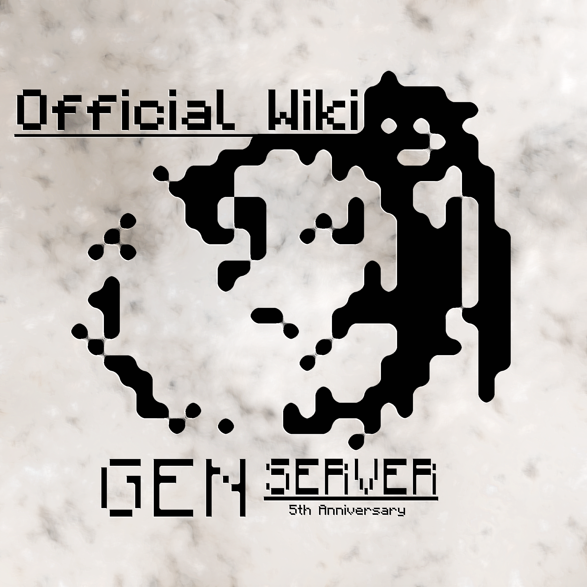

Join the GenServer Discord
GenServer公式Wiki
※このサイトにはGenServerRPG(TwilightStarRPG)のネタバレが多く含まれています。 重大なネタバレは伏せていますが、閲覧する場合は自己責任でお願いします。 また、Rinrinが一人で書いたものなので一部情報が間違っている可能性があります。 もし誤まった情報がありましたら
Twitter
もしくは
Discord
でご報告して頂ければ幸いです。
Top